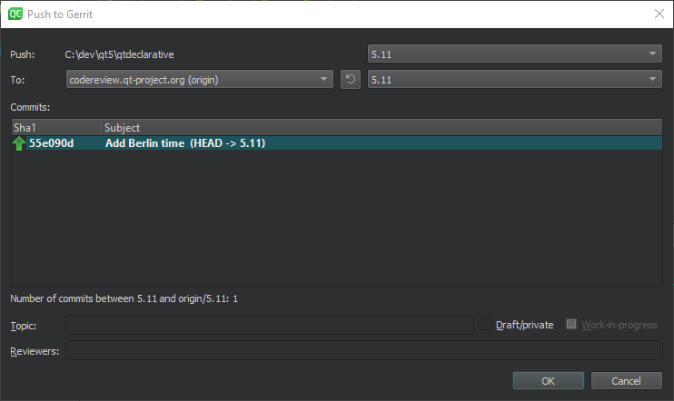
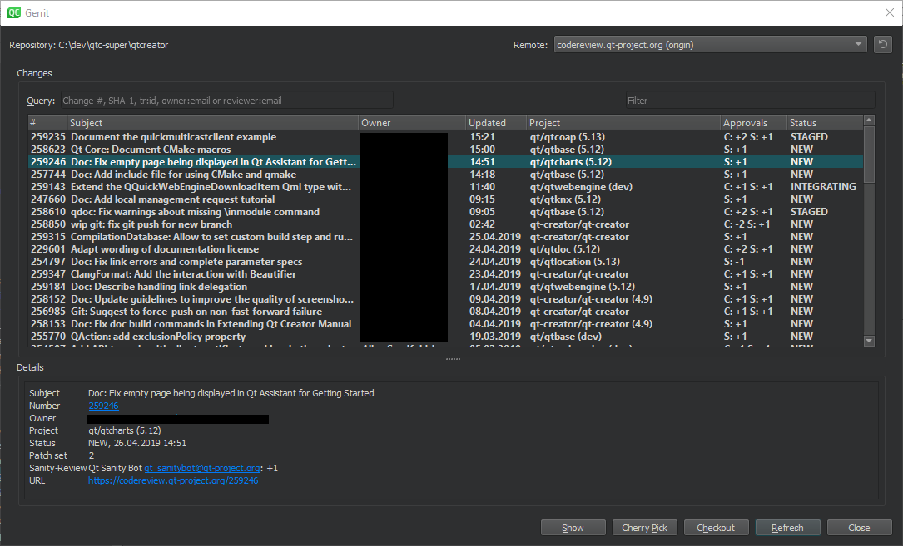
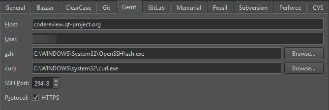

Review code with Gerrit
If your Git project uses Gerrit for code reviews, you can view your changes in Qt Creator.
To push committed changes to Gerrit, go to Tools > Git > Remote Repository > Push to Gerrit.

Push drafts to Gerrit
Select Draft/private to push changes that are only visible to you and the reviewers. If you are using Gerrit 2.15 or later, you can select Work-in-progress to push changes that do not generate email notifications.
View changes as in Gerrit
To view the same information about each change as in the Gerrit web interface, go to Tools > Git > Remote Repository > Gerrit.

View details of changes
To view details of the selected change, select Show.
Cherry-pick changes
To cherry-pick the selected change to the local repository, select Cherry Pick. To remove the change after testing it, select Tools > Git > Local Repository > Reset. In the Undo Changes to dialog, select the state to reset the working directory to, and then select OK.
Checkout changes
To check out the change in a headless state, select Checkout.
Refresh changes
To refresh the list of changes, select Refresh.
Remote lists the remotes of the current repository that are detected as Gerrit servers. Go to Preferences > Version Control > Gerrit to specify a fallback connection to a Gerrit server over SSH. The Gerrit REST interface and the curl tool are used for HTTP connections.
Select HTTPS to prepend https to the Gerrit URL if Gerrit does not add it.

See also How To: Use Git and Git.